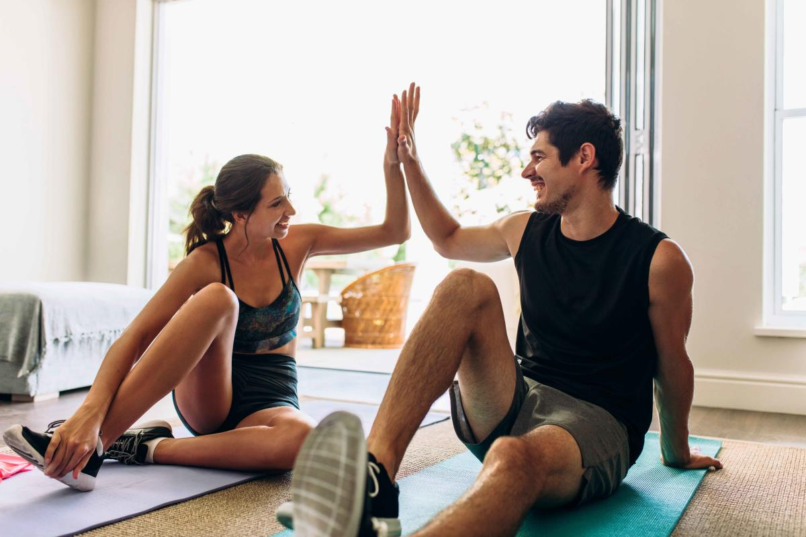

Comidas saludables recomendadas.
Entrar En este apartado encontraras todo lo que necesites para Comer de manera saludable porque nos ayuda a tener
un buen estado de salud, a sanar o realizar procesos de recuperación, a combatir enfermedades e infecciones y
a evitar enfermedades cronicas degenerativas causada por la obesidad.
Ademas que es una buena forma de vivir y empezar a comer sanamente preocupandote de tu salud segun lo
recomendado por distintos medicos y nutricionistas.
